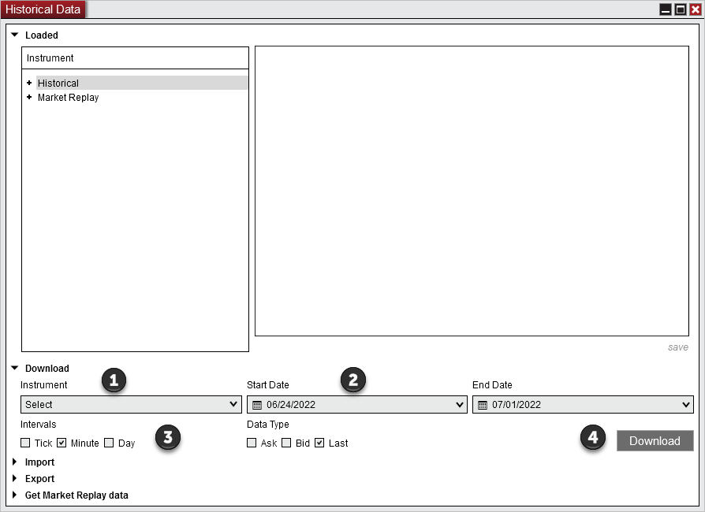

|
<< Click to Display Table of Contents >> Download |


|
Download
|
<< Click to Display Table of Contents >> Download |
|
Historical data can be downloaded from the data provider via the Download section.
How to Download Historical DataTo download historical data first make sure NinjaTrader is connected and historical data is available from your data provider.
Select an instrument for data to be downloaded. (Tip: You may also select an instrument list) Select the desired Start and End date range Select the desired Intervals and Data Types Press the "Download" button to begin the download

A message in the bottom right of the Historical Data Window will appear and display the status of the download.
To cancel a historical data request close the Historical Data Window window.
|